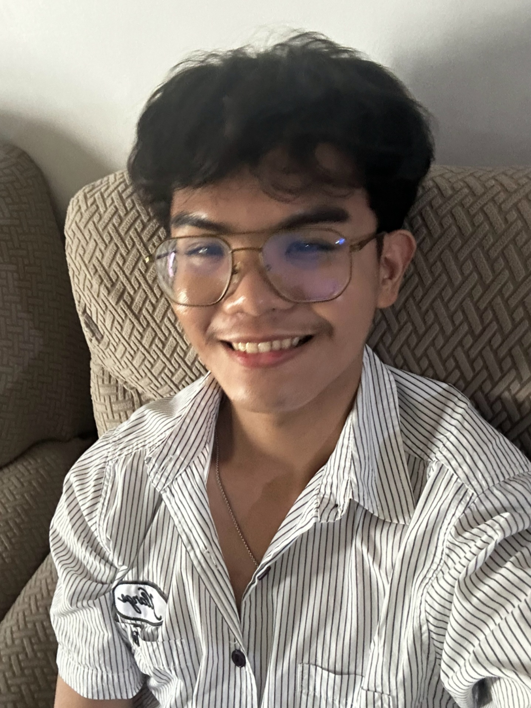
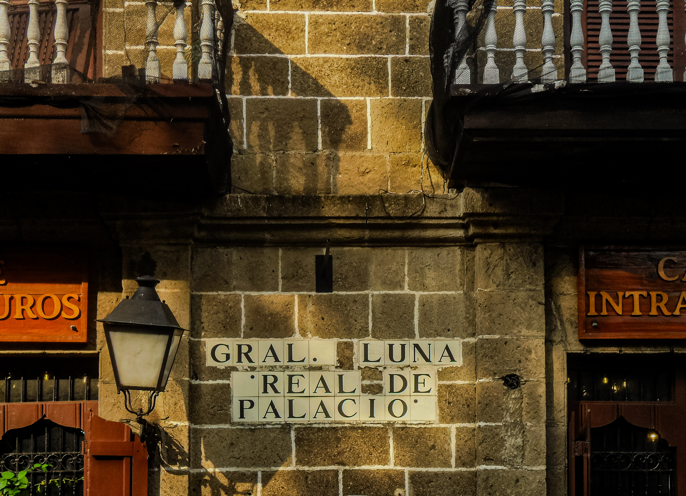
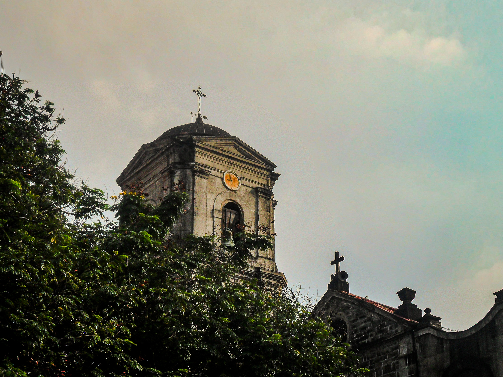
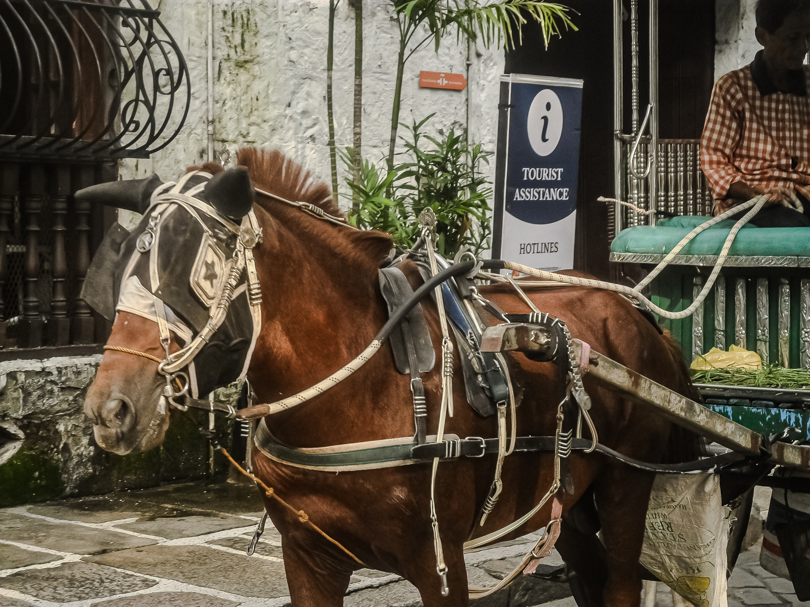

About Me

that's me! ✿
hello there!
I'm Eivan, a Second-year BA Multimedia Studies student at the University of the Philippines Open University. I am interested in how technology, creativity, and communication come together to create meaningful digital experiences. I enjoy learning new things, exploring ideas, and developing my skills in multimedia and web development.
Things I Love
- UI/UX design and web development
- Photography and visual storytelling
- Multimedia production and creative projects
- Music, especially songs by NIKI
- Volleyball and badminton
- Learning new skills and exploring technology
Passion Projects
Photography: Stories Through My Lens
Photography is one of the creative fields I want to explore and develop further. Through this passion project, I aim to capture meaningful moments, everyday scenes, and details that people might otherwise overlook. I want to use photography to tell stories, express emotions, and present ordinary experiences from a different perspective.



Contact
Want to connect or talk about creative projects? Feel free to reach out through email.
✉ Send me an emailhope to hear from you! ୨୧